Candidate List 20260923Last night — ZTF: 1,759 passed basic cuts (34 young) · LSST: 0 passed basic cuts (0 young)Previous Day Next Day
Section 1: New Sources (age<1d) Section 2: Old (1-5d) sources observed last nightplaceholder
Section 1: New Afterglow/FBOT Cands Last Night (0)
Section 2: Older Sources Observed Last Night (7)
0. [ZTF] ZTF26abvdwrk (Afterglow?) [Back to Top] [Share] [Trigger Swift] [Fritz Alert] [Fritz Source] [Lasair]RA, Dec: 302.08273, 50.6744 20h 8m19.85s, 50d40m27.83sGalactic (l, b): 85.56495, 9.61516 ext(g-r) = 0.21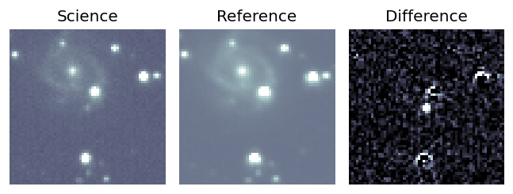
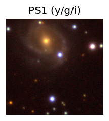

TESS: Sectors [ 14 15 16 41 54 55 56 75 76 81 83 120 121]
PS1: 1 source in 3 arcsec Closest: d = 6.61 arcsec photoz=0.35+/-0.11 peak abs mag = -23.41
LegacySurvey: 0 sources in 3 arcsec
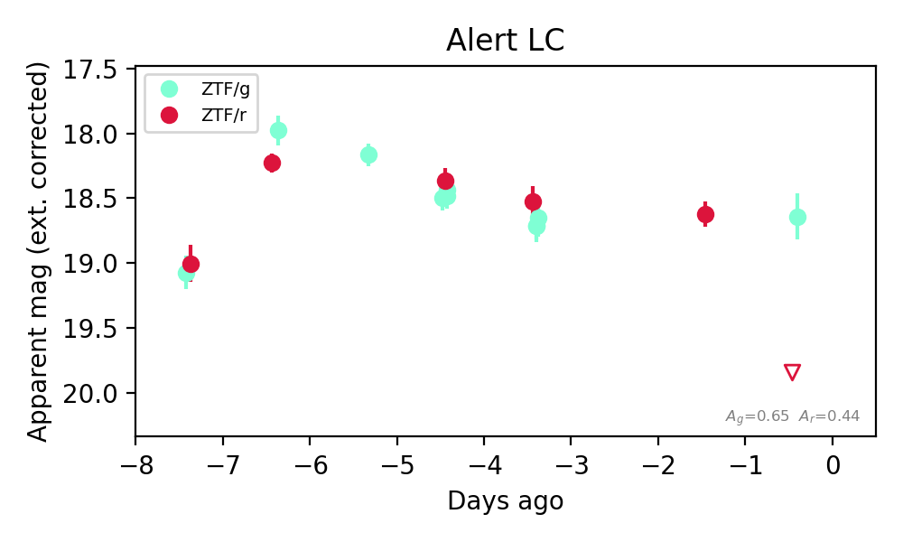
Extinction-corrected gr color:
From alerts: -1.2 +/- 99 mag
Rise Rate:
r: 0.58 mag/day
Fade Rate:
r: 1.22 mag/day
1. [ZTF] ZTF26abwafvw (FBOT?) [Back to Top] [Share] [Trigger Swift] [Fritz Alert] [Fritz Source] [Lasair]RA, Dec: 273.95735, 42.77599 18h15m49.76s, 42d46m33.55sGalactic (l, b): 70.24161, 24.25288 ext(g-r) = 0.04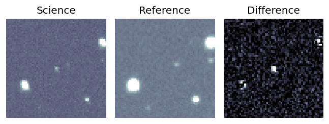
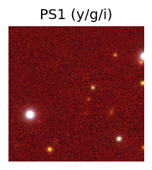
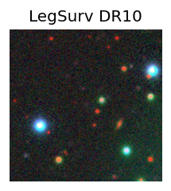
TESS: Sectors [ 26 40 52 53 54 74 79 81 119]
PS1: 0 sources in 3 arcsec
LegacySurvey: 1 sources in 3 arcsec Closest: d = 0.69 arcsec, 314.9 deg (east of north) photoz=0.96 (68% bounds 0.76, 1.16), type=REX peak abs mag (ext. corrected) = -25.28 (68% bounds -24.66, -25.78)
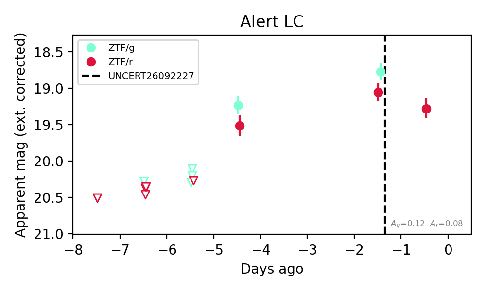
Extinction-corrected gr color:
From alerts: -0.28 +/- 0.17 mag
Rise Rate:
g: 1.06 mag/day
r: 0.77 mag/day
Fade Rate:
2. [ZTF] ZTF26abwqfcv (Afterglow?FBOT?) [Back to Top] [Share] [Trigger Swift] [Fritz Alert] [Fritz Source] [Lasair]RA, Dec: 48.84407, 25.01121 3h15m22.58s, 25d 0m40.37sGalactic (l, b): 159.7749, -27.37649 ext(g-r) = 0.148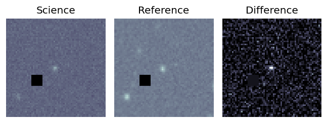
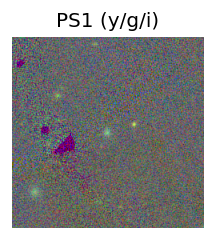

TESS: Sectors [18 42 43 44 70 71]
PS1: 1 source in 3 arcsec Closest: d = 0.77 arcsec photoz=0.38+/-0.14 peak abs mag = -22.24
LegacySurvey: 0 sources in 3 arcsec
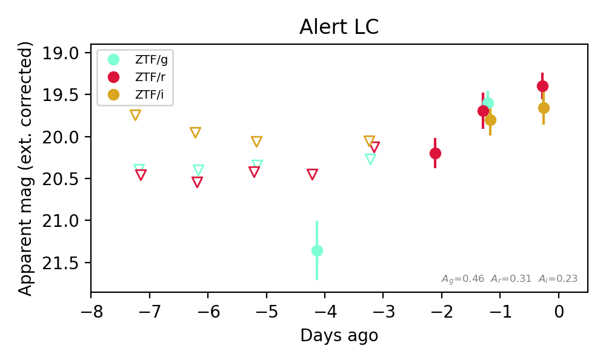
Extinction-corrected gr color:
From alerts: -0.09 +/- 0.26 mag
Extinction-corrected gi color:
From alerts: -0.2 +/- 0.24 mag
Extinction-corrected ri color:
From alerts: -0.26 +/- 0.26 mag
Consistent with synchrotron, g-r>0!
Rise Rate:
g: 0.6 mag/day
r: 0.43 mag/day
i: 0.05 mag/day
Fade Rate:
3. [ZTF] ZTF26abwqpgt (Afterglow?) [Back to Top] [Share] [Trigger Swift] [Fritz Alert] [Fritz Source] [Lasair]RA, Dec: 257.36063, 46.51575 17h 9m26.55s, 46d30m56.68sGalactic (l, b): 72.35736, 36.47704 ext(g-r) = 0.027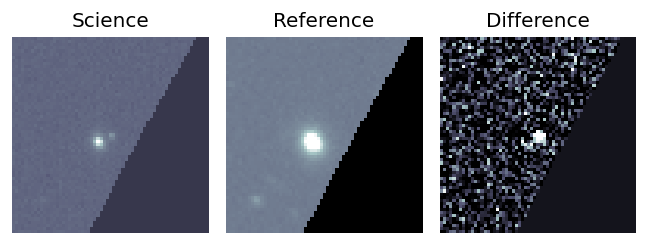
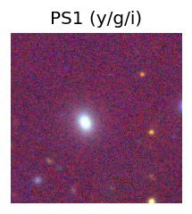
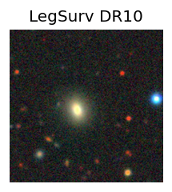
TESS: Sectors [ 24 26 51 52 53 78 79 80 117 118]
SDSS (<15 kpc):Found SDSS phot-z: z=0.09; peak abs mag = -18.98
NED photo-z only: WISEA J170926.95+463054.7 (G, 4.6″) z=0.1023 [zflag PUN] — not used for peak abs mag
PS1: 0 sources in 3 arcsec
LegacySurvey: 1 sources in 3 arcsec Closest: d = 1.54 arcsec, 256.3 deg (east of north) photoz=0.3 (68% bounds 0.04, 0.44), type=REX peak abs mag (ext. corrected) = -21.89 (68% bounds -17.18, -22.89)
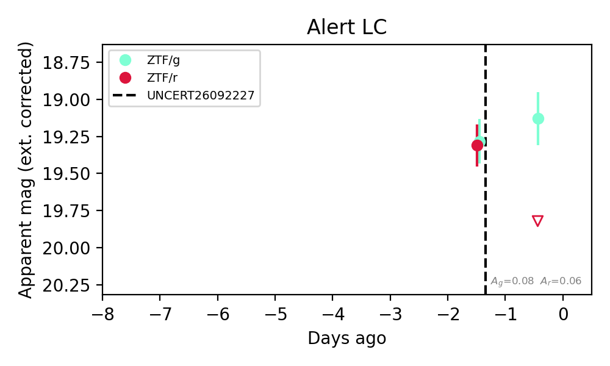
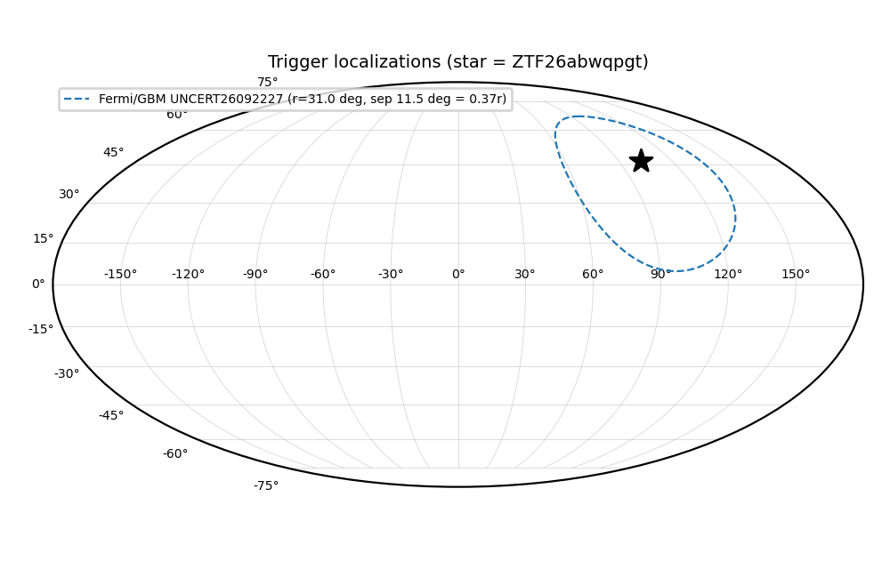
Extinction-corrected gr color:
From alerts: -0.69 +/- 99 mag
Rise Rate:
g: 0.14 mag/day
r: 0.1 mag/day
Fade Rate:
r: 0.48 mag/day
4. [ZTF] ZTF26abwqpsg (FBOT?) [Back to Top] [Share] [Trigger Swift] [Fritz Alert] [Fritz Source] [Lasair]RA, Dec: 261.0566, 29.39342 17h24m13.58s, 29d23m36.32sGalactic (l, b): 52.60728, 30.78385 ext(g-r) = 0.04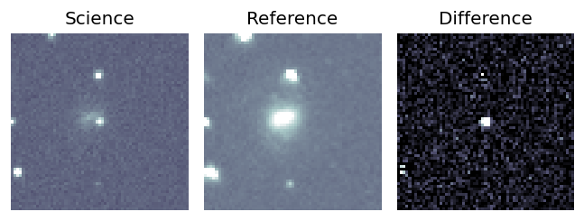
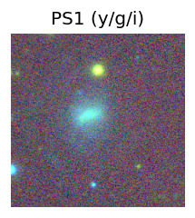
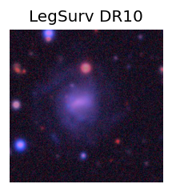
TESS: Sectors [ 25 26 52 53 79 117 118]
SDSS (<15 kpc):Found SDSS phot-z: z=0.03; peak abs mag = -17.56
PS1: 0 sources in 3 arcsec
LegacySurvey: 1 sources in 3 arcsec Closest: d = 2.29 arcsec, 2.5 deg (east of north) photoz=0.16 (68% bounds 0.07, 0.38), type=REX peak abs mag (ext. corrected) = -21.57 (68% bounds -19.65, -23.7)
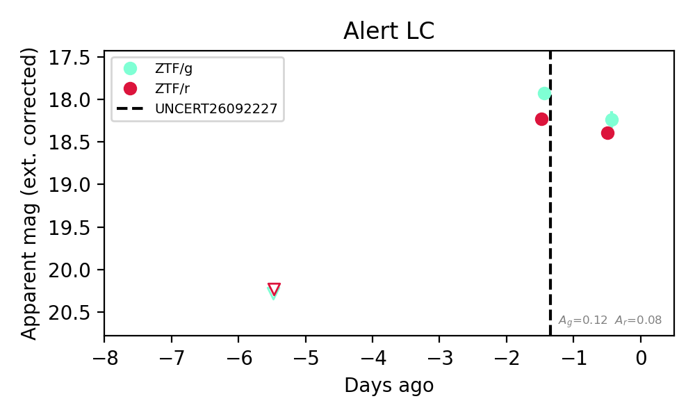
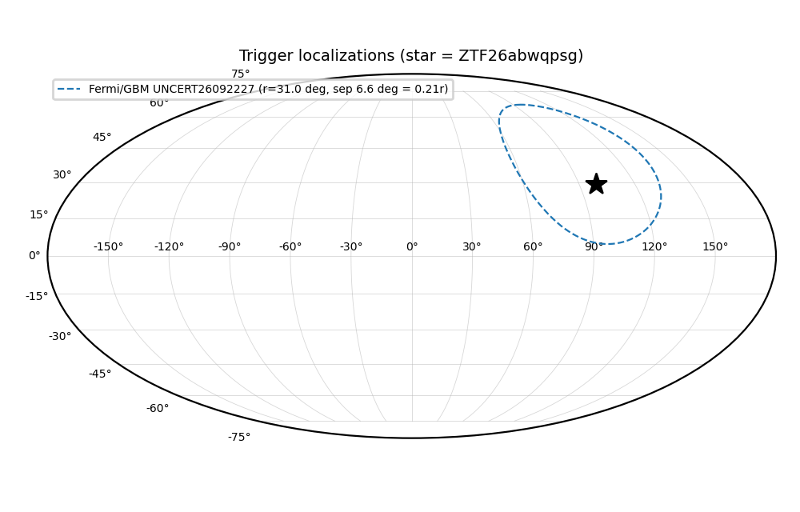
Extinction-corrected gr color:
From alerts: -0.15 +/- 0.12 mag
Rise Rate:
g: 0.58 mag/day
r: 0.5 mag/day
Fade Rate:
g: 0.31 mag/day
5. [ZTF] ZTF26abwqwzc (Afterglow?FBOT?) [Back to Top] [Share] [Trigger Swift] [Fritz Alert] [Fritz Source] [Lasair]RA, Dec: 277.19293, 43.89426 18h28m46.30s, 43d53m39.33sGalactic (l, b): 72.12034, 22.30102 ext(g-r) = 0.046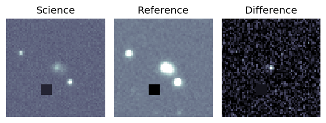
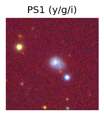
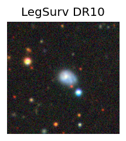
TESS: Sectors [ 14 26 40 41 53 54 74 79 80 81 118 119]
PS1: 0 sources in 3 arcsec
LegacySurvey: 1 sources in 3 arcsec Closest: d = 1.65 arcsec, 288.7 deg (east of north) photoz=0.33 (68% bounds 0.09, 0.56), type=REX peak abs mag (ext. corrected) = -21.83 (68% bounds -18.6, -23.19)
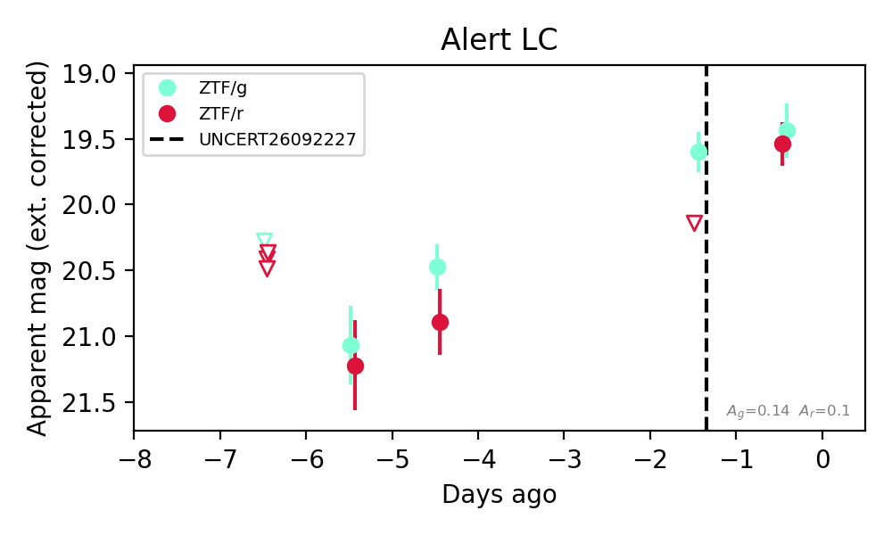
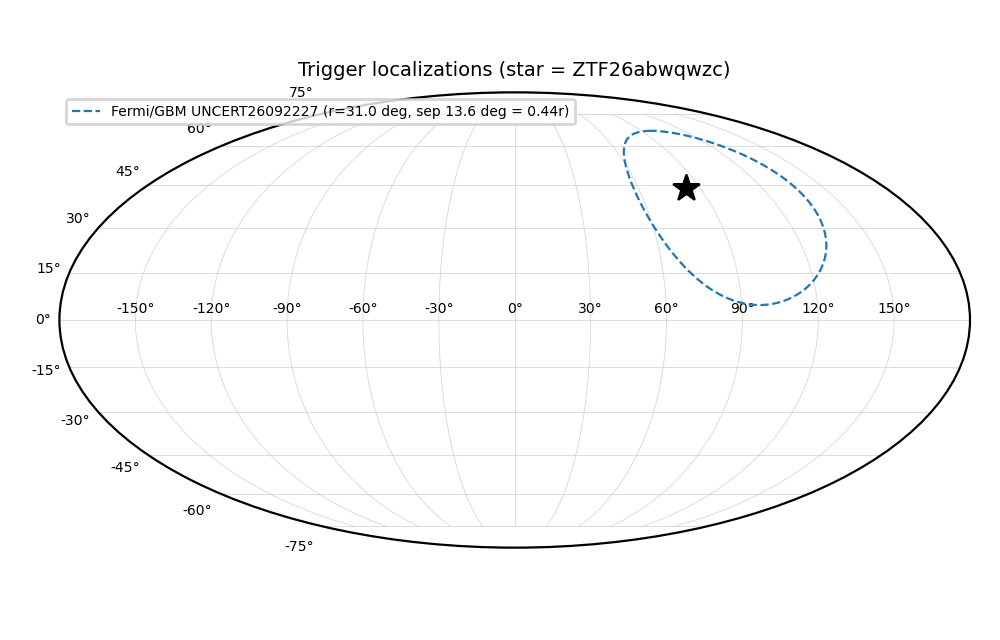
Extinction-corrected gr color:
From alerts: -0.1 +/- 0.27 mag
Consistent with synchrotron, g-r>0!
Rise Rate:
g: 0.3 mag/day
r: 0.59 mag/day
Fade Rate:
6. [ZTF] ZTF26abwyqqq (Afterglow?) [Back to Top] [Share] [Trigger Swift] [Fritz Alert] [Fritz Source] [Lasair]RA, Dec: 325.11857, 75.03195 21h40m28.46s, 75d 1m55.01sGalactic (l, b): 111.4251, 16.61449 ext(g-r) = 0.495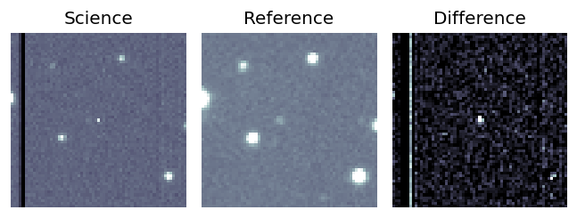
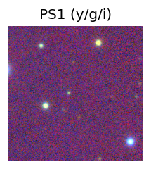

TESS: Sectors [17 18 19 24 25 52 57 58 59 73 77 78 79 84 85 86]
PS1: 1 source in 3 arcsec Closest: d = 3.36 arcsec photoz=0.60+/-0.17 peak abs mag = -26.17
LegacySurvey: 0 sources in 3 arcsec
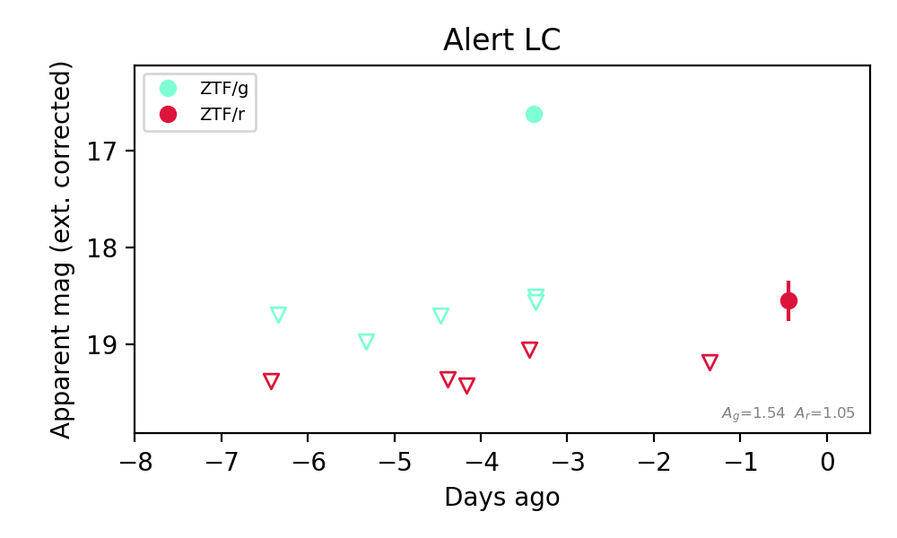
Extinction-corrected gr color:
From alerts: -2.44 +/- 99 mag
Rise Rate:
g: 1.92 mag/day
r: 0.7 mag/day
Fade Rate:
g: 130.48 mag/day